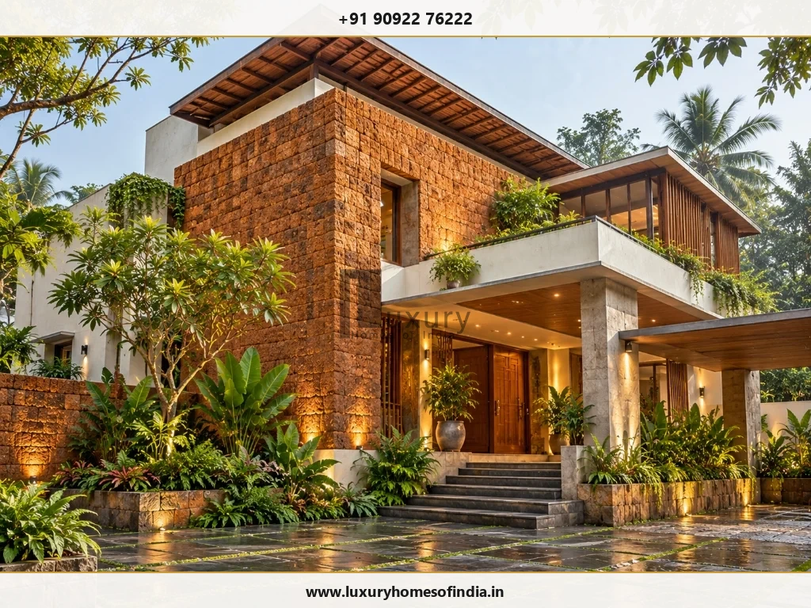

Keep your home-building project connected—from decisions to execution.
Building a home involves more than construction work. Drawings, consultants, materials, contractors, approvals and homeowner decisions all need to connect at the right time.
Residential project management provides a structured way to coordinate those moving parts around an agreed scope and programme. It can make responsibilities clearer, keep outstanding decisions visible and give the project team a consistent way to review progress.
At Luxury Homes of India, the published construction process describes phased execution supported by a dedicated site engineer and project manager, together with supervision, material quality control and progress reporting. The exact scope of support should be confirmed for your appointment.
If you are exploring residential project management in Chennai, start by defining what needs to be managed, who has authority to make decisions and what responsibilities belong to each professional.

What does residential project management cover?
The scope depends on the project, contract and responsibilities agreed between the parties. It may address:
- construction planning and programme coordination;
- coordination between drawings, consultants and site teams;
- progress reviews;
- procurement interfaces;
- homeowner decision tracking;
- variation records;
- commercial information;
- completion and handover coordination.
Project management does not automatically replace the architect, structural engineer, specialist consultant or contractor.
Before appointing a project manager, clarify:
| Responsibility | What to establish |
|---|---|
| Programme | Who prepares and updates the programme? |
| Drawings | Who coordinates current information? |
| Decisions | Who records outstanding homeowner decisions? |
| Changes | Who reviews and authorises variations? |
| Costs | Who tracks commercial information? |
| Technical review | Who performs technical inspections? |
| Safety | Who holds the relevant safety responsibilities? |
| Completion | Who verifies and accepts completed work? |
Clear responsibilities matter more than the title “project manager.”
Why coordination matters on a Chennai home project
A residential project in Chennai can involve several overlapping workstreams: design information, site execution, services, procurement, homeowner selections and specialist installations.
The useful question is not simply “Who is managing the site?”
It is:
“Who is responsible for keeping the project's information, decisions, programme and execution connected?”
That distinction helps homeowners understand whether they need construction supervision, project coordination, technical consultancy, independent review or a combination of these services.
Establish the project before managing it
A project needs a shared reference before execution begins. Bring together:
- homeowner requirements;
- available site information;
- agreed drawings;
- work packages;
- material specifications;
- consultant and contractor responsibilities;
- commercial terms;
- proposed milestones;
- outstanding approvals and decisions.
Unresolved scope should remain visible rather than becoming an assumption.
A useful project-management appointment should make it clear which information is confirmed, which is pending and who is responsible for resolving each item.
Coordinate the construction programme
A useful programme explains the sequence of work and the dependencies between activities. For a residential project, those dependencies may include design information, approvals, site conditions, homeowner selections and material availability.
Work sequencing
Identify how different packages relate to one another. Civil works, services and finishes need coordination rather than disconnected schedules that create conflicts.
Decision deadlines
Record when layouts, products and finishes need approval. A delayed selection can affect procurement or subsequent installation.
Material lead times
Identify products that require early confirmation and establish how alternatives will be reviewed if availability changes.
Progress reviews
Agree how completed work, upcoming activities, decisions and issues will be communicated.
A programme is a management reference—not a guarantee that no delay can occur.
Keep drawings and site information aligned
Construction depends on clear and current information. Establish how the project team will:
- identify drawings authorised for execution;
- record revisions;
- raise technical questions;
- resolve coordination issues;
- communicate approved changes;
- retain relevant records.
A layout change can affect structure, services and interiors. A project manager's coordination role should not replace approval by the responsible designer or engineer.
Track the decisions that affect progress
Homeowners remain part of the delivery process. Materials, fittings, equipment and design changes may require approval before work proceeds.
A decision record can help identify:
| Decision item | What to record |
|---|---|
| Required approval | Drawing, product or change under review |
| Responsible person | Person who can approve or advise |
| Supporting information | Specification, sample or cost details |
| Required date | When the decision is needed |
| Implications | Potential procurement or programme effect |
| Status | Pending, approved or requiring revision |
Confirm whether this type of record is included in the proposed LHI appointment and how it will be shared.
Manage variations with clarity
Changes should not rely on informal instructions alone. Before additional work is authorised, establish:
- The proposed change.
- Any required design or technical review.
- The cost impact.
- Programme implications.
- The person authorised to approve it.
- The record that updates the agreed scope.
Project management should make these decisions traceable. It should not imply that every change can be absorbed without cost or programme consequences.
Define quality-review responsibilities
Coordination and technical verification are different responsibilities.
Your agreement should identify who reviews workmanship, materials, testing and specialist installations. The responsible professionals should establish the appropriate technical checks for the project.
LHI's published construction process describes material quality control, supervision and phase-based safety and quality checks. The actual inspection arrangements and documentation should be confirmed for your appointment.
Do not assume that general progress reporting constitutes an independent technical audit.

Understand budget and payment coordination
Project management can help organise commercial information, but the exact role needs to be defined. Clarify whether the appointment includes:
- budget tracking;
- review of allowances;
- variation records;
- contractor payment recommendations;
- procurement commitments;
- reporting on approved and proposed changes.
Distinguish the overall project budget from the timing of payments. Also identify who has authority to approve expenditure.
Plan completion before the final stage
A project should have defined completion requirements. Depending on the agreement, coordination may include:
- outstanding-work records;
- snagging;
- relevant testing and commissioning;
- product manuals;
- warranty information;
- keys and system access;
- agreed drawings or records;
- handover documentation.
Confirm who checks, supplies and accepts each item.
Project-management support with LHI
LHI's published construction offering connects phased execution with site-engineering and project-management support. It also describes material quality control, supervision, progress tracking and reporting within its construction process.
For your proposed home, discuss:
- the assigned team;
- verified experience and responsibilities;
- site presence;
- reporting arrangements;
- consultant coordination;
- technical-review responsibilities;
- commercial authority;
- completion deliverables.
These details should appear in the appointment rather than remain verbal expectations.
[REQUIRES VERIFIED LHI INPUT: CONFIRM WHETHER RESIDENTIAL PROJECT MANAGEMENT IS AVAILABLE AS A STANDALONE APPOINTMENT OR ONLY AS PART OF LHI CONSTRUCTION CONTRACTS.]
Frequently asked questions
Give your home project a clearer structure
Bring your plans, priorities and current project information.
Speak with Luxury Homes of India about management support that makes responsibilities, decisions and progress easier to understand.
Call: +91 90922 76222
Email: info@luxuryhomesofindia.in